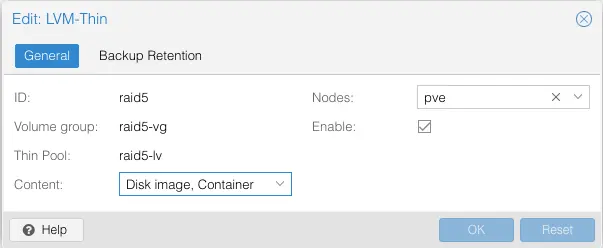

Create a Proxmox LVM Thinpool
О различных типах хранилищ можно почитать в документации Proxmox. Мне требовалось создать хранилище с поддержкой снапшотов и которое будет распологаться на локальных дисках. Под такие требования подходит как ZFS, так и LVM-thin. ZFS не поддерживает диски, которые собраны при помощи аппаратного RAID-контроллера, так что остался вариант с LVM-thin.
Создаем раздел на диске с меткой GPT.
fdisk /dev/sdb g n 1 t lvm wВ результате у вас получится 1 раздел на диске с именем /dev/sdb1 с меткой GPT и типом раздела Linux LVM
root@pve:~# fdisk -l Disk /dev/sdb: 1.63 TiB, 1796997120000 bytes, 3509760000 sectors Disk model: ServeRAID M5015 Units: sectors of 1 * 512 = 512 bytes Sector size (logical/physical): 512 bytes / 512 bytes I/O size (minimum/optimal): 512 bytes / 512 bytes Disklabel type: gpt Disk identifier: 6AFD126E-1CE0-FC4D-A606-80A03E2F9D2D Device Start End Sectors Size Type /dev/sdb1 2048 3509759966 3509757919 1.6T Linux LVM
Затираем всю служебную информацию, которая могла оставаться на разделе
dd if=/dev/zero bs=1M count=50 of=/dev/sdb1 status=progress
Создаем новую таблицу разделов
sgdisk -N 1 /dev/sdb1
Создаем PV на диске
pvcreate --metadatasize 1024M -y -ff /dev/sdb1
Создаем группу raid5-vg и том raid5-lv на всем объеме группы.
vgcreate --metadatasize 1024M raid5-vg /dev/sdb1 lvcreate -l 100%FREE --poolmetadatasize 1024M --chunksize 256 -T -n raid5-lv raid5-vg
Добавляем хранилище в Proxmox
Переходим в раздел Datacentre –> Storage –> LVM-Thin и жмем “Create Thinpool”.

{kind=link}